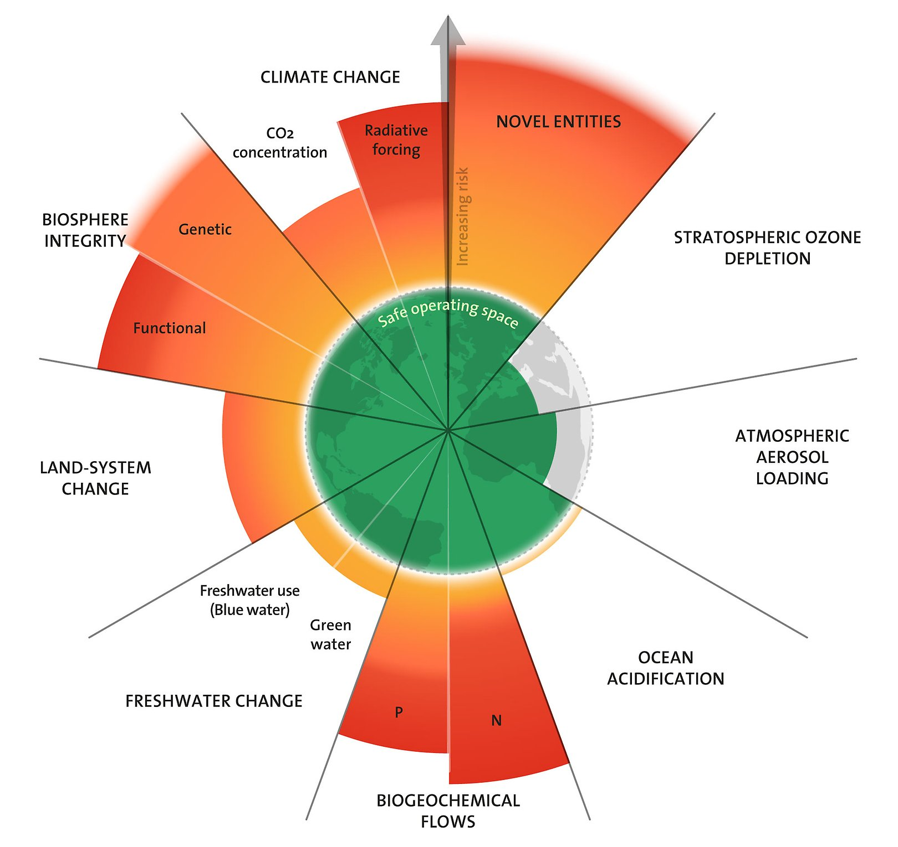

吃一口，
牽動什麼？
永續小食堂 2026.09.10
先玩一場，再把食物背後的關係連起來。
你喜歡的食物，
明年還能一樣嗎？
一樣容易買到？一樣的價格？一樣的味道？
地球也有安全範圍
7／9
2025 年評估
七項界限已越界
壓力持續累積，
生活更難維持穩定。
減少壓力，仍然有意義。

一份食物，會用到什麼？
- 種植與飼養：土地、水、肥料與飼料
- 加工與運送：設備、能源與包裝
- 生態也受影響：棲地、土壤與水中的生命
今天的玩法
- 第一節：食物版「誰是臥底」
- 把遊戲中說出的描述留下來
- 第二節：做出我們自己的食物關係圖
誰是臥底
10人
五組各派兩人
每輪換人上場
8＋2
八人拿相同食物
兩人拿另一種食物
每個人說一句
- 輪流描述，不能直接說出名稱或諧音
- 先想在哪裡遇到它、怎麼吃、誰會買
- 聽完一圈，參賽者同時指認可疑的人
台下也有任務
- 記下兩句參賽者的原話
- 圈一句你想追問的描述
- 想一想：這句話來自觀察，還是印象？
先試一圈
老師示範：描述「鉛筆」
- 我通常在學校遇到它。
- 用一段時間後，長度會改變。
第 1 輪
五組各派兩位新參賽者
一句描述，留下線索。
每人約 10 秒；每輪最多兩次票決
第 2 輪
五組各派兩位新參賽者
一句描述，留下線索。
每人約 10 秒；每輪最多兩次票決
第 3 輪
五組各派兩位新參賽者
一句描述，留下線索。
每人約 10 秒；每輪最多兩次票決
剛才，大家怎麼描述食物？
這些描述，藏著新的問題
- 「一年四季都有」：是怎麼做到的？
- 「每次味道差不多」：誰在維持？
- 「我覺得很健康」：這個印象從哪裡來？
等一下，我們來找
食物背後的人與做法
留下你最想追問的一句話。
一份雞塊，
很多人的工作
飼養→加工→運送→販售
每個環節，都有人決定怎麼做。
食品工業化
把食物大量、穩定地做出來。
- 機械與分工
- 規格與流程
- 加工、保存與運輸
為什麼長得這麼像？
一致的規格
大小、外觀、份量
比較容易包裝與販售
接著想
不符合規格的食物，
會到哪裡去？
為什麼可以放這麼久？
加工與保存
冷藏、冷凍、乾燥、包裝
讓食物比較方便保存
接著想
它省下什麼？
又需要什麼？
資本主義下的食物供應
企業投入資金，透過市場販售，並追求利潤。
成本、售價、銷量，都會影響決定。
賣得出去，會影響怎麼做
- 廣告與品牌，讓商品被看見
- 採購與定價，影響成本和收入
- 消費者的預算與習慣，也會回頭影響市場
方便的同時，還有什麼？
我們得到的
容易買到
保存更久
有時比較便宜
值得追問的
用了多少資源？
工作的人過得如何？
哪些成本沒寫在標價上？
一條線，也是一句解釋
下雨
雨水落在地面→
地面潮濕箭頭指向影響；線上的字說明理由。
我們這一組的食物關係圖
- 選至少 8 張卡，連出至少 6 條線
- 每條線寫一句「如何影響」
- 補一張自己的卡，標一條「可能／待查」
draw.io 三個動作
- 拖曳卡片，安排你們的想法
- 從卡片邊緣的小箭頭，拖到另一張卡
- 雙擊連線，寫上原因或「可能／待查」
開始連線
每畫一條，先問組員：
「你覺得這條線說得通嗎？」
完成後，挑一條最想分享的線
卡住的時候
- 它讓什麼變得比較容易？
- 誰可能受益？誰可能多付出？
- 這一定會發生嗎？還要哪些條件？
看看別組的一條線
「我理解你們的意思是……」
「我還想問的是……」
今天的作業
- 圖上填班級、組別與日期
- 下載 .drawio 原檔，再匯出 PNG 圖片
- 兩個檔案一起交到老師指定的作業
今天，我開始注意到……
一位以前沒注意到的人，
或一件以前沒想過的事。
還有，我想再問……
下週：一杯咖啡，
誰分到多少？
9/17 咖啡小農的生活